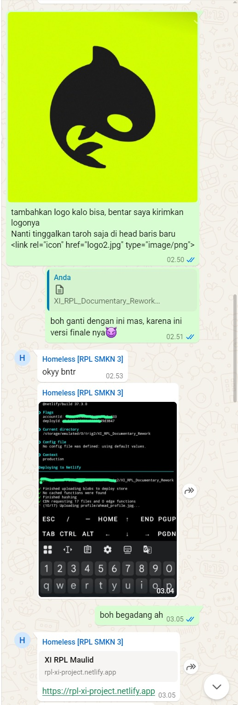

1
KAMIS
Awal Perencanaan

Hari PertamaPada hari Kamis, setiap kelompok berkumpul untuk berdiskusi dan merencanakan wadah Maulid. Kami menentukan isi, hiasan, konsep, serta menghitung anggaran yang diperlukan.
✦
Merancang konsep dan menentukan kebutuhan kegiatan.